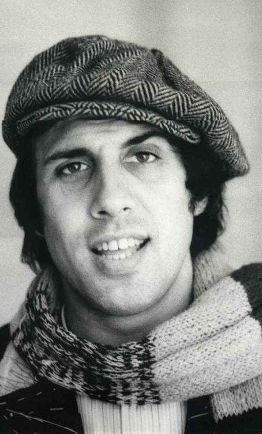

Known Artists
Adriano Celentano
Adriano Celentano is one of the most flexible artists of all times in Italy. He was born on 6th of January , 1938 in Milan. Celentano has published a lot of albums which absolutely have become a great success. He is known worldwide for his masterpieces and he has been also a big support for the Italian music.
Laura Pausini
Laura Pausini was born in 17 May 1974.She is one of the most famous italian singers in all the world.Her songs are magical and she has performed in different countries and in diffrent languages other than italian."La Solitudine" is the title of the her greatest success.Laura is also a songwriter.